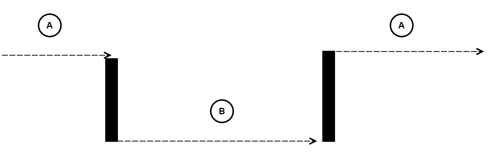
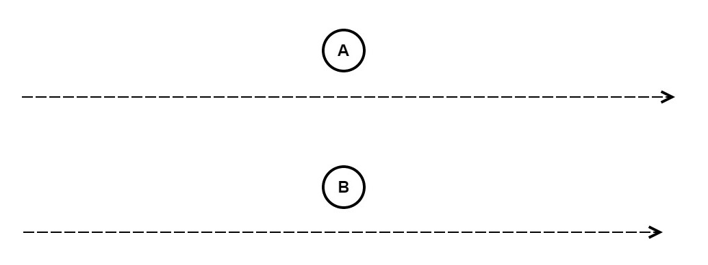
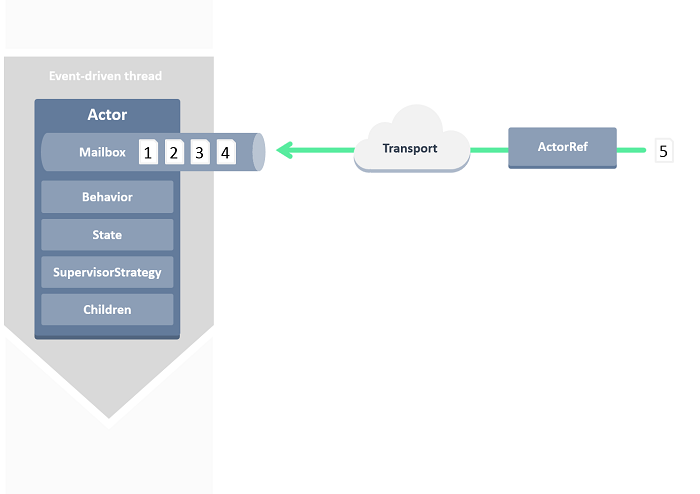
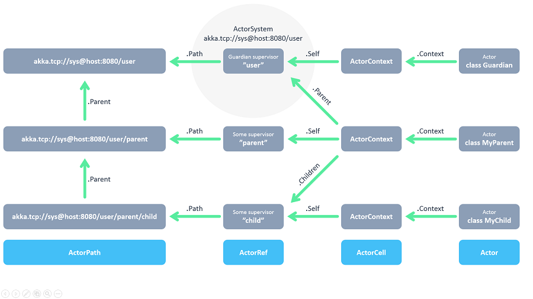

Things we'll cover:
- Reactive Programming
- Quick Concepts Overview
- Akka.Net
- Actor System
- Messaging
- Referencing Actors
- Supervision and Monitoring
- Remoting
- Clustering
- Deployment
Things we'll cover:
It is NOT:
BUT:

//NOT Reactive
var a = 2;
var b = 3;
var c = a + b;
a = 6
console.log(c); // prints/evaluates to 5, not 9
//REACTIVE
var c = function(){
return a + b
}
console.log(c()); // prints/evaluates to 9
b = 7
console.log(c()); // prints/evaluates to 13
//NOT Reactive
var a = 2; // event: init a then set a = 2
var b = 3; // event: init b then set b = 3
var c = a + b; // event: init c then set c = eval(2 + 3)
a = 6 // event: update/set a = 6
console.log(c);
//REACTIVE
var c = function(){ // event: update/set c = function(scope){ return eval: scope.a + scope.b }
return a + b
}
console.log(c()); // event: update/set c = eval(6 + 3)
b = 7
console.log(c()); // event: update/set c = eval(6 + 7)
How do we order events in a distributed system?
M1 ---------------
M2 ---------------
M3 ---------------
Events: A, B, C happen on three different systems.
Two or more threads/processes executing simulatenously but not necessarily at the same time.

Two or more threads/processes executing simulatenously at the same time.

Managing code blocks between two or more executing threads/processes.
Two or more threads/processes executing code blocks without need for synchronizing.
//Async with jQuery AJAX
$.ajax({
url: "foo.js",
data: bar()
})
.done(function(data) {
console.log(data);
})
.fail(function() {
console.log("FAIL");
});
One thread/process can possibly block (halt) the execution of another thread/process.
The thread/process makes a call or request then continue's execution and possibly handles the return request at a later time.
//Blocking
function foo(){
var foobar = bar(); // blocks until the bar method returns the value of count
console.log(foobar);
}
function foo(){
var count = 0;
for(var x = 0; x < 100; x++){ count += 1; }
return count;
}
A thread or process is blocked in a waiting (dead) state, usually waiting on a resource
A thread or process is unblocked (doing other things) but still waiting on a resource to become available
Data that can change over it's lifespan
Data that remains unchanged over it's lifespan
A unique configuration, usually as a snapshot in time
class Foo{
const int bar = 1; //Immutable
int foobar = 1; //Mutable
}
class Program{
void main(){
var myFoo = new Foo(); //State snapshot myFoo(bar = 1, foobar = 1)
myFoo.foobar = 3; //State snapshot myFoo(bar = 1, foobar = 3)
}
}
Akka.NET

// An Actor extends the ReceiveActor
public class GreetingActor : ReceiveActor {
public GreetingActor(){
Receive<Greet>(greet => Console.WriteLine("Hello {0}", greet.Who));
}
}
// Or extends UntypedActor
public class GreetingActor : UntypedActor {
protected override void OnReceive(Greet greet){
Console.WriteLine("Hello {0}", greet.Who);
}
}
// Or extends TypedActor and Implements IHandle <Message>
public class GreetingActor : TypedActor, IHandle <Greet> {
void Handle(Greet greet){
Console.WriteLine("Hello {0}", greet.Who);
}
}
// Messages can be any type of object, like a class with a method
public class Ping {
public string toString(){
return "Ping!";
}
}
// Or a class which has an immutable reference to another Actor instance
public class Start {
public IActorRef Actor { get; private set; }
public Start(IActorRef actor){
Actor = actor;
}
}

// We can lookup actors via the ActorSelection() method
Context.ActorSelection("/user/" + query.Name).Tell(new Hello());
// Or we can use an IActorRef to send a message to an actor directly.
IActorRef actorlookup = system.ActorOf("actorlookup");
actorlookup.Tell(new Query(input));
every actor has 5 stages of life
every actor has hook methods to define code

//
akka {
loglevel = DEBUG
actor {
provider = ""Akka.Remote.RemoteActorRefProvider, Akka.remote""
}
remote {
helios.tcp {
transport-class = ""Akka.Remote.Transport.Helios.HeliosTcpTransport, Akka.Remote""
transport-protocol = tcp
port = 8090
hostname = localhost
}
}
}
//
Console Application
ASP.NET
Windows Service using TopShelf
Azure